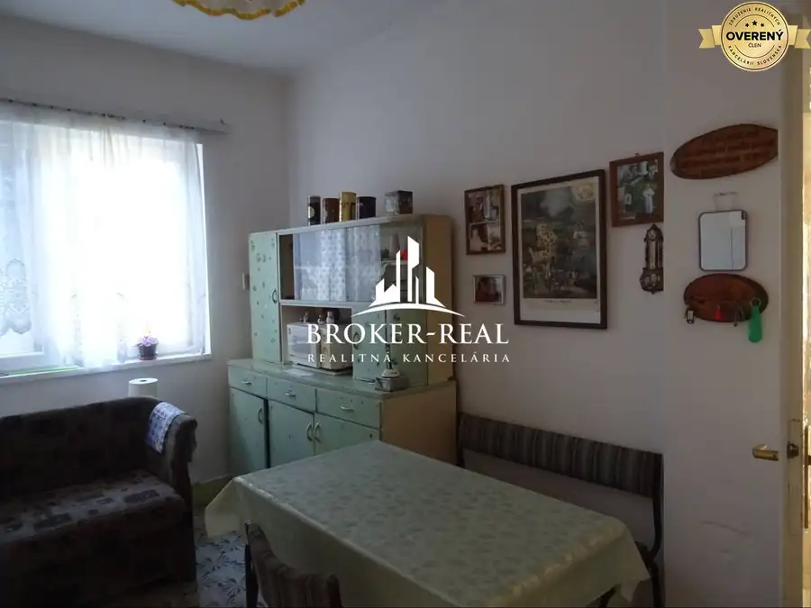
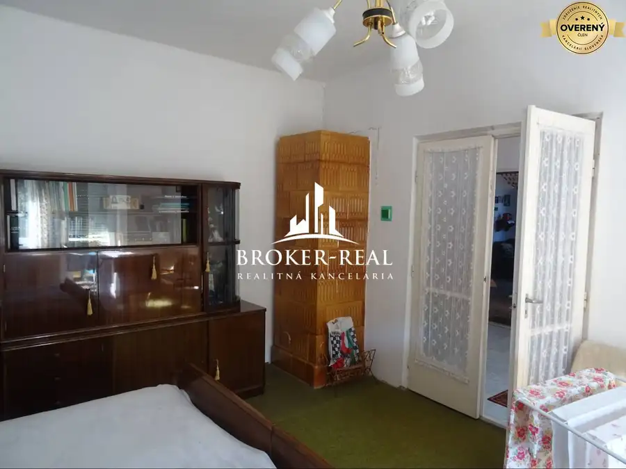
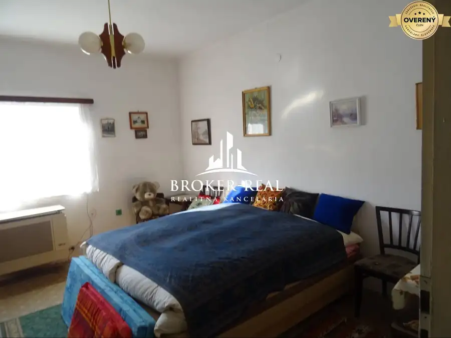
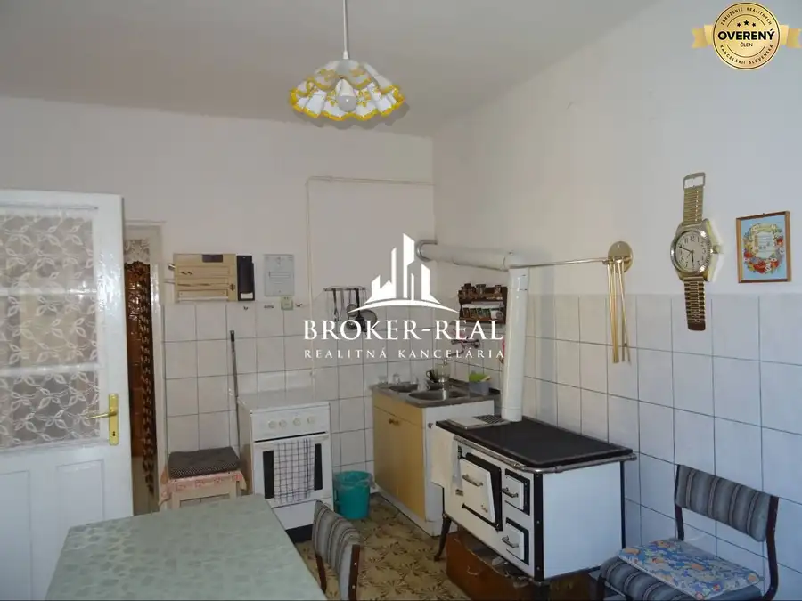
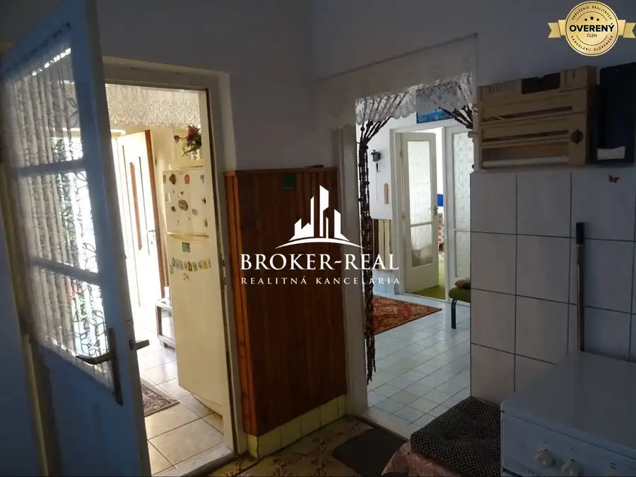
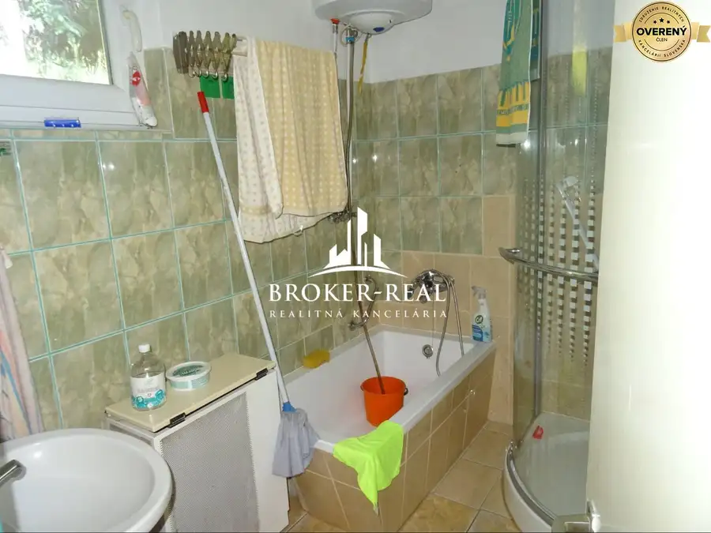
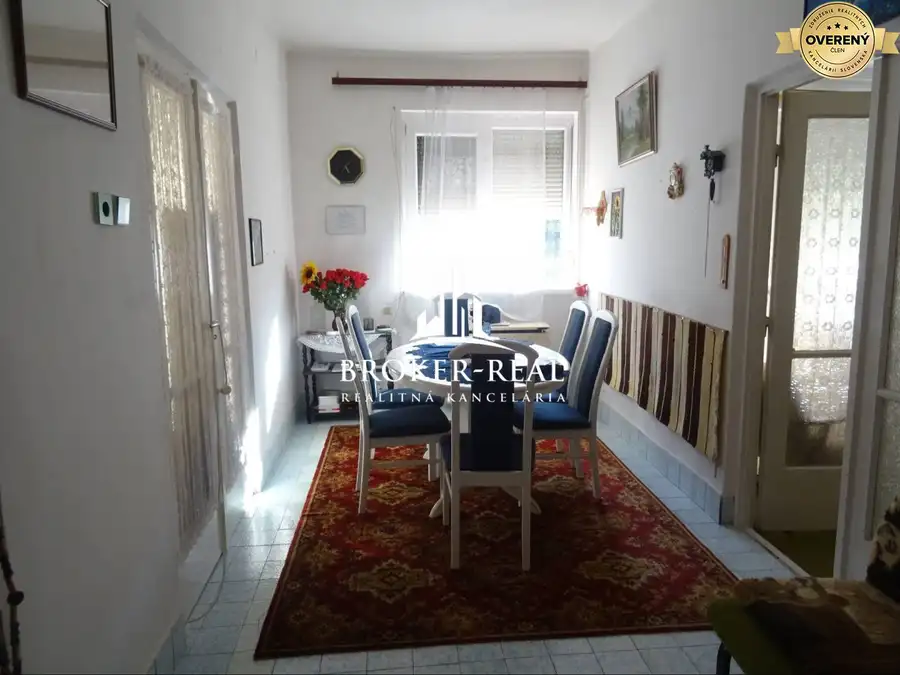
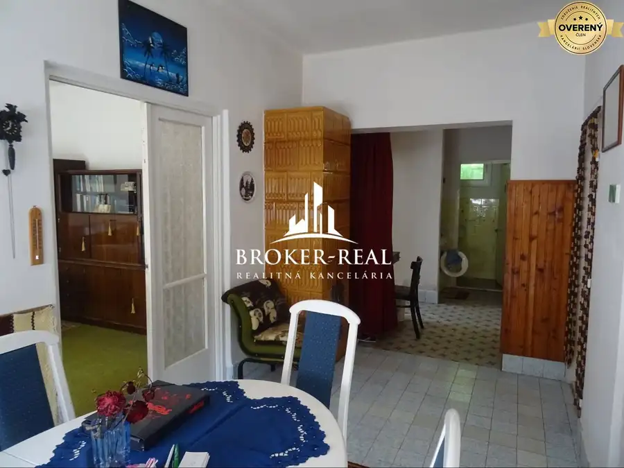

3 - izbový Rodinný dom - Telkibánya, Maďarsko
Telkibánya, Telkibanya









- Dispozícia3-izbový
- Plocha120 m²
- Stavčiastočne prerobený
O nehnuteľnosti
Na predaj 3 izbový Rodinný dom v obci Telkibánya, Maďarsko. Hlavnú stavbu tvorí 1 podlažný rodinný dom postavený v roku 1985. Ďalšou stavbou na pozemku je garáž a letná kuchynka. Prístup na rovinatý slnečný pozemok v tvare obdĺžnika je drevenou bránou z asfaltovej komunikácie v prednej časti domu. Pozemok je celý oplotený, delený na časť predzáhradka, dvor predný a dvor zadný a zatrávnená záhrada. Parkovanie možné na dvore. Lokalita: V obci žije 650 obyvateľov, vzdialená 6 km od hraničného priechodu Milhosť a 22 km od Košíc. Nehnuteľnosť je umiestnená v nezáplavovom a nezosuvovom pásme, bez ťarchy, voľná po dohode, spravidla do týždňa. Celkový stav nehnuteľnosti: dobrý technický stav.
Ak sa Vám inzerát nezobrazuje celý, nájdete ho na našej stránke...broker-real.sk : ID- 977
Zverejnené údaje v texte sú na základe informácií od vlastníka nehnuteľnosti.
Plochy: Pozemok 1500 m2, úžitková plocha 120 m2
Technický popis: Konštrukcia objektu: MURIVO : kváder. STROPY : drevené podbité doskami, omietnuté. PODLAHY : dlažby, betón. OMIETKY : stierky. VONKAJŠIA OMIETKA : fasádna omietka. OKNÁ: plastové - izolačné dvojsklo. DVERE exteriérové vchodové plastové, interiérové dvere drevené - presklené. STRECHA : valbová, prikrytá pálenou škridľou na drevenom krove. Elektrická prípojka zavedená do domu vzduchom. Plynová prípojka na zemný plyn v dome. Kanalizácia verejná. Kúrenie gamatky, alternatívne kúrenie kozubovými kachľami. VODA : obecný vodovod, kopaná studňa, ohrev teplej vody elektrickým bojlerom. Celkový stav nehnuteľnosti: veľmi dobrý technický stav.
Popis miestností: Chodba, kuchyňa, jedáleň, 3 x nepriechodná izba, špajza, kúpeľňa s vaňou a sprchovým kútom, samostatné WC, podzemná pivnica na pozemku.
Podkrovie : možnosť vytvorenia ďalšieho obytného priestoru.
Výhody: Cena nami ponúkanej nehnuteľnosti je stanovená vlastníkom a zahŕňa poplatky: kúpna zmluva a overenie, zavkladovanie nehnuteľnosti prostredníctvom autorizovaného právnika, odovzdanie a prepis energií u dodávateľov, tlmočenie pred úradmi.
Ceny nehnuteľností sa môžu meniť v súvislosti so zmenou kurzu v danom čase.
Ďalšie informácie obdržíte v našej kancelárii, termín osobného stretnutia alebo obhliadky si dohodnite na telefónnom čísle: + .
Váš spoľahlivý realitný maklér a poradca ®.
Parametre
- Rozloha pozemku
- 1500 m²
- Celková rozloha
- 1500 m²
- Úžitková plocha
- 120 m²
- Poschodie
- neuvedené
- Počet izieb
- 3
- Stav
- čiastočne prerobený
- Status
- aktívne
- Parkovanie
- verejné
- Dátum zverejnenia
- 2026-09-04